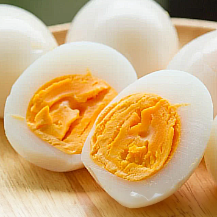
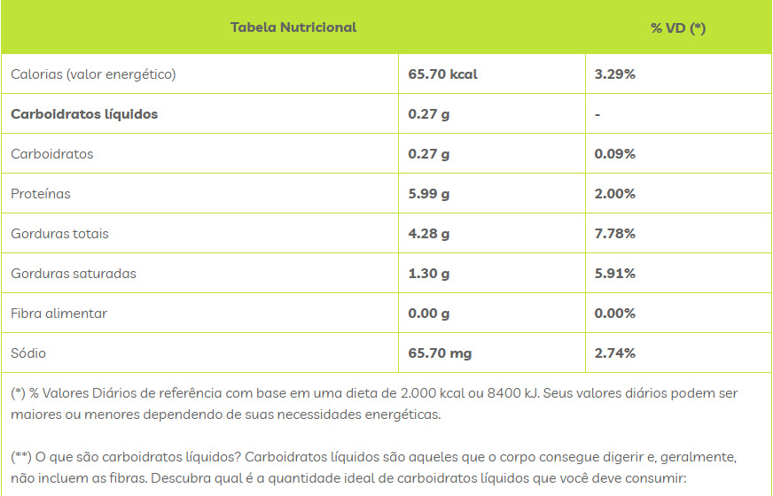

Ovo Cozido
O ovo é considerado um dos alimentos mais completos, sendo uma excelente fonte de proteínas, vitaminas e minerais, como as vitaminas A, E, D, colina e selênio. Ele também possui carotenoides, como a luteína e zeaxantina, que ajudam a proteger a saúde dos olhos. Além disso, o ovo contém gorduras boas, como as mono e polinsaturadas. Para pessoas com alergias, é importante saber que o ovo não contém glúten nem lactose, mas pode desencadear reações alérgicas devido à presença de proteínas como a albumina, encontrada principalmente na clara. A seguir, uma tabela nutricional estimada do ovo cozido por 1 unidade:

